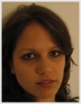

|
|
Organiser of the ICPS 2009 is the Student Section of Croatian Physical
Society (SSCPS). Members of the Organising Commitee are undergraduate
and graduate students, all members of the SSCPS: Marko Sever (chair),
Marko Banušić, Damir Cvetovac, Andrej Ficnar, Matea
Hruška, Goran Nikšić, Marko Pavić, Ana Prpić,
Dijana Rapić and Josipa Delić. (Hover here
to find out how to pronunciate our strange Croatian characters.)
The official e-mail address of the Organising Committee is icps2009@fizika.org,
where you can direct any questions and comments.
Here are our pictures and a little bit about ourselves (click
on the pictures for higher resolution). |
|  |
Ana Prpić
Ana is a 2nd year student of physics at
the Faculty of Natural and Mathematical Sciences, University of Split.
Her passions are astrophysics, hip-hop dancing and photography. ICPS
2009 is a challenge and a valuable new experience for her :)
Contact: aprpic@gmail.com |
|
Andrej Ficnar
Andrej finished his undergraduate physics
studies at the University of Zagreb and is now a graduate student
of physics at the Columbia University. He’s interested in high
energy physics - stuff like quantum gravity, extra dimensions and
all that mumbo-jumbo. He also likes fine beer, Family Guy and designing
extremely cool websites such as this one.
Contact: aficnar@phys.columbia.edu |
|
Dijana Rapić
Dijana is
a final year student of mathematics and physics at the Faculty of
Natural and Mathematical Sciences, University of Split. Her scientific
interest is in elementary particle physics and in her free time she
enjoys bonsai training, photography, rollerblading and traveling.
She participated at the ICPS in Portugal, Romania, United Kingdom
and Poland. Organisation of the ICPS is a new experience and a challenge
to her.
Contact: dijrap@pmfst.hr |
|
Goran Nikšić
Goran
was born in Zagreb in 1984, where he attended primary and high-school.
Today he is a junior researcher and teaching assistant at the University
of Zagreb. His field of research is solid state physics, especially
strongly correlated electron systems (such as high-Tc superconductors).
He takes part in various educational and popular physics projects.
His hobbies include, but are not limited to dancing, singing and playing
music.
Contact: gniksic@fizika.org |
|
Marko Banušić
Marko
is best known among his colleagues as a young and aspiring politician.
He is always involved in every student activity, be it protests or
free food. Good friends like to think of him as self absorbed and
witty. He always says that he puts the interests of fellow students
above his own, a life view that takes its toll on his courses. His
current interests are politics, dancing and procrastination.
Contact: mbanusic@gmail.com |
|
Marko Sever
Marko is the chair
of the ICPS2009 Organising Committee. He’s in the final year
of his undergraduate study of educational physics at the University
of Zagreb, Faculty of Science. His interests are diverse, and he likes
all things young people like, but not younger than him. He is interested
in different branches of physics and one day he is hoping to be in
the field of nuclear physics.
Contact: msever@fizika.org |
|
Matea Hruška
Matea
finished her economies study at the University of Zagreb, Faculty
of Economics and Business. She is currently working in a private company
in the field of finance, accounting and controlling. She doesn’t
know how she ended up organising this conference but she has always
known that she liked physics, especially friction and heat. Well,
she’s having fun, experiencing new things and learning things
she never knew existed.
Contact: matea.hruska@gmail.com |
|
Josipa Delić
Josipa is a 3rd year student of physics and mathematics at the Faculty
of Natural and Mathematical Sciences, University of Split. She is
interested in any activity that could help young people find their
interests. She likes mathematics and physics equally and enjoys singing,
playing the piano and working with the choir that she conducts. She’s
always looking forward to participate in any new project.
Contact: jdelic.navjestitelji@gmail.com |
|
Marko Pavić
Marko is
an oceanography PhD student at the University of Zagreb. He is professionally
interested in Adriatic dynamics, Antarctic Circumpolar Current dynamics
and Carbon fluxes in the North Atlantic. Although he enjoys working
in science he is much more enthusiastic about traveling and meeting
new people. Around Christmas he returned from research cruise to Antarctica
and currently is boring his friends with tons of photos of penguins
and ice-bergs as well as stories about midnight sledging across the
frozen continent. He also enjoys life and at the parties he’s
the one with good wine, port, whisky or cigar.
Contact: mpavic@gfz.hr |
|
Damir Cvetovac
Damir is
a student of physics at the University of Zagreb. He is interested
in too many fields of physics and should pick one (for his own good).
He likes good music, going to ICPS and Linux. Besides organising ICPS,
he is involved in promoting physics and fighting for students’
rights.
Contact: dcvetova@fizika.org |
Student Section of the Croatian Physical Society (SSCPS) is a non-profitable
organisation of Croatian students of physics and a representative of Croatia
in the International Association of Physics Students (IAPS) as a National
Commitee. It was founded in 1994 as one of the sections of the Croatian
Physical Society (CPS). Primary goal of the Section is to improve the
education of students of physics and geophysics through socialising and
collaboration, as well as to appropriately contribute to the development
of the scientific community in Croatia.
Students' interests for working in Section are diverse: from simple socialising,
fun and traveling, to gaining experience in research and engagement in
improving conditions of study at our universities. The Section has about
130 members, mostly students of physics and geophysics, and through regular
contact with the Section, its alumnae (now mostly graduate students) also
take part in its activities. Level of involvement in Section's activities
is determined by the members themselves and self-initiative is always
appreciated.
Activities of the Section are manifested in several projects, initiated
and run by the Section's members, project coordinators, and the overall
activity of the section is coordinated by the President of the Section,
Vice-President and the Secretary. Student section of the Croatian Physical
Society has very rich and diverse activities; some of the most successful
projects include scientific expedition to Mongolia in 1998 (for observation
of the meteor rain of Leonidas), editing JiAPS, an international physics
journal, during 1998 and 1999, organisation of the ICPS 2000 in Zadar,
presidency of IAPS during 2002 and 2003, visits to various research laboratories
in Croatia to establish stronger bonds between the students and the scientists,
and many other.

Croatian Physical Society (CPS) was founded on December 19, 1990 with
the aim of promotion and development of scientific, educational and pedagogic
activities in the field of physics. Prior to that date, the Croatian physicists
acted within the frame of the Society of the Croatian Mathematicians and
Physicists (founded in 1949), which developed out of the Mathematics-Physics
Division of the Croatian Society of Natural Sciences (founded on August
27, 1945).
The activities of the Croatian Physical Society are carried out through
Divisions - Scientific, Educational, Students', Division for promotion
of Physics and Division for Industrial and Applied Physics. The Society
publishes scientific journals FIZIKA A and FIZIKA B, and popular magazine
Mathematical-Physical Journal (in cooperation with the Croatian Mathematical
Society) for pupils, teachers and students. Other activities of the CPS
include E-school of Physics, organisation of the Summer School for Young
Physicists, primary and high school competitions in physics (on regional
and national levels), as well as preparation of gifted students for participation
in international competitions (Physics Olympiad and Young Physicist's
Tournament).
CPS is a member of European Physical Society (EPS) and the International
Union of Pure and Applied Physics (IUPAP). The Society has about 678 members,
out of which about 156 are high school teachers, and 200 are students.

IAPS is an association of physics students and student societies from
around the globe, working to promote peaceful collaboration amongst them.
Its members are represented by national and local committees, who meet
regulary to ensure the relevance of IAPS' activities.
Since 1987 IAPS has worked continously to promote peaceful relations
and collaboration between physics students. We support our members in
their academic and professional work, as well as discussing and acting
on scientific, social and cultural issues. IAPS is a recognised non-governmental
organisation run entirely by students from around the world with a spirit
of mutual understanding and equality. IAPS runs an annual International
Conference for Physics Students (ICPS), visits to global research institutions,
summer schools, exchange programmes and multinational meetings all over
the world.
IAPS collaborates with numerous international bodies including amongst
others: the European Physical Society, the Institute of Physics and the
American Physical Society (their student wing runs a national competition
to sponsor their students to attend our events).
Split is the largest city on the Croatian coast of the Adriatic Sea; after
Zagreb it is the second largest city in Croatia. It is situated between
the gulf of Kaštela, which can be seen from the northern side of
Marjan, and the mountain ranges of Kozjak and Mosor. Because of the protection
of the high mountains, we have very mild, typical Mediterranean climate
here in Split.
This area has been attractive to man for habitation ever since early prehistory.
The Greeks founded their first colonies in the area in the 4th century
BC: Tragurion (Trogir), Salonae (Solin), Epetion (Stobrec). In the period
of Roman domination Salonae developed into a large city. Not far from
Salonae, there was a small Greek settlement called Aspalathos which got
the name after a plant which in early spring blooms with tiny, intensive
yellow flowers - brnistra. In the Roman period it was named Spalatum.
The palace of the Roman emperor Diocletian was built at the bottom of
the southern cove of the peninsula of Split, in the period between 293
and 305 AD.
Diocletian’s palace is the world’s best preserved palace from
the Roman period. In 1979 the historic core of Split together with the
Palace became a part of the UNESCO’s list of world heritage; it
is considered in the whole world as the key building for the understanding
that type of architecture. After being under Byzantine rule, Venetian
Republic, Napoleon, Austro-Hungarian Monarchy, as well as a part of Yugoslavia,
Split in now one of the most beautiful cities in Croatia, and in Europe
as well; the people in Split tend to call it “the most beautiful
city in the world”. And maybe that is not far from truth, especially
considering the fact that all those rulers left beautiful monumental traces
in the city, which are preserved to this very day. Come and see many different
architectural monuments all existing in harmony; come and walk along the
most beautiful embankment you have ever seen; come and enjoy our beautiful
sea!

|
|
|


{kind=link}
{kind=link}
{kind=link}
{kind=link}
{kind=link}
{kind=link}
{kind=link}
{kind=link}
{kind=link}
{kind=link}
{kind=link}
{kind=link}
{kind=link}
{kind=link}
{kind=link}